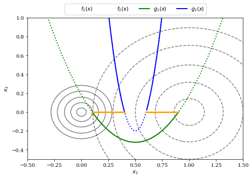
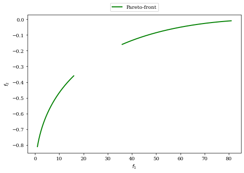
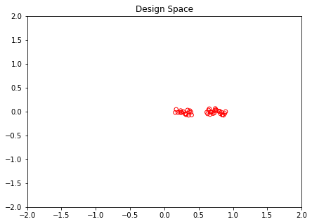
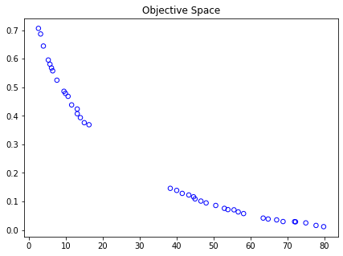
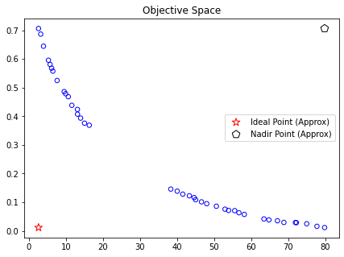
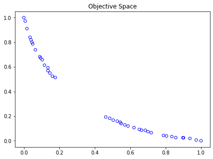
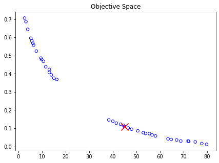
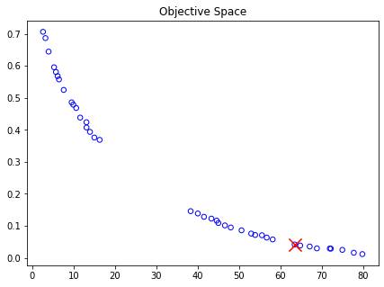
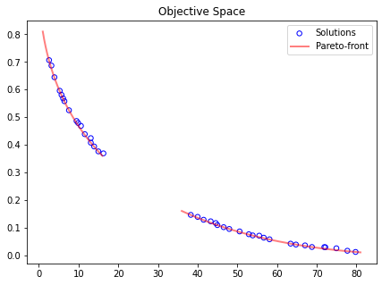

Pymoo 多目标优化笔记（一）
和小姜一起看电机优化的程序时，听到了一句帕累托前沿。于是……
原理固然很重要，但是简单应用的话，套路形式才是开始应该关注的
基础概念
在不失一般性的前提下，优化问题可以被定义为如下形式：
其中， 表示第 个待优化的自变量， 表示自变量的上下边界， 表示第 个目标函数， 表示第 个不等式约束， 表示第 个等式约束。另外， 的意思为 表示受限于。
如果之前没接触过多目标优化，可以先阅读下Multi-Objective Optimization Using Evolutionary Algorithms
变量类型：在定义问题时，变量类型是一个重要概念。一般有连续、离散、二进制、排列组合甚至和混合类型；
变量数量：变量的数量直接关系到内存占用和计算效率；
目标函数数量：当目标函数多于一个时，最优解一般由一组非支配解组成；
约束条件：一般分为等式约束和不等式约束，约束条件的优先级要大于上下边界；
多模式：如何快速找到全局最优解，以及避免落入局部最优解；
可微性：如果目标函数二阶微分存在，那么将能为优化提供高效的指导作用；
评估时间、不确定性
不等式约束的双目标优化
示例如下：
手工分析
首先两个目标函数分别在 时取到最小值，又因为两个目标函数是二次函数（凸函数），所以要使两个函数同时达到最优解，则最优解一定在两个最小值坐标的连线上。再加上不等式条件的约束，则得到最优值的取值范围为：
import numpy as np
X1, X2 = np.meshgrid(np.linspace(-2, 2, 500), np.linspace(-2, 2, 500))
F1 = 100 * (X1**2 + X2**2)
F2 = (X1-1)**2 + X2**2
G1 = 2 * (X1[0] - 0.1) * (X1[0] - 0.9)
G2 = 20 * (X1[0] - 0.4) * (X1[0] - 0.6)
import matplotlib.pyplot as plt
plt.rc('font', family='serif')
## 绘制目标函数的等值线
levels = np.array([0.02, 0.1, 0.25, 0.5, 0.8])
plt.figure(figsize=(7, 5))
CS = plt.contour(X1, X2, F1, 10 * levels, colors='black', alpha=0.5)
CS.collections[0].set_label("$f_1(x)$")
CS = plt.contour(X1, X2, F2, levels, linestyles="dashed", colors='black', alpha=0.5)
CS.collections[0].set_label("$f_2(x)$")
## 绘制约束条件
plt.plot(X1[0], G1, linewidth=2.0, color="green", linestyle='dotted')
plt.plot(X1[0][G1<0], G1[G1<0], label="$g_1(x)$", linewidth=2.0, color="green")
plt.plot(X1[0], G2, linewidth=2.0, color="blue", linestyle='dotted')
plt.plot(X1[0][X1[0]>0.6], G2[X1[0]>0.6], label="$g_2(x)$",linewidth=2.0, color="blue")
plt.plot(X1[0][X1[0]<0.4], G2[X1[0]<0.4], linewidth=2.0, color="blue")
## 绘制有效区间
plt.plot(np.linspace(0.1,0.4,100), np.zeros(100),linewidth=3.0, color="orange")
plt.plot(np.linspace(0.6,0.9,100), np.zeros(100),linewidth=3.0, color="orange")
plt.xlim(-0.5, 1.5)
plt.ylim(-0.5, 1)
plt.xlabel("$x_1$")
plt.ylabel("$x_2$")
plt.legend(loc='upper center', bbox_to_anchor=(0.5, 1.12),
ncol=4, fancybox=True, shadow=False)
plt.tight_layout()
plt.show()下图中橙色实线即表示最优解的取值范围：

绘制Pareto 前沿
因为，所以可以减少自变量的个数，并且简化目标函数：
联立上面两式可得，并且考虑自变量 的取值范围，可以得到 的图像：
import numpy as np
import matplotlib.pyplot as plt
plt.figure(figsize=(7, 5))
f2 = lambda f1: - ((f1/100) ** 0.5 - 1)**2
# f1 的取值范围分为两段
F1_a, F1_b = np.linspace(1, 16, 300), np.linspace(36, 81, 300)
# 同样f2 也被迫分为两段
F2_a, F2_b = f2(F1_a), f2(F1_b)
plt.rc('font', family='serif')
plt.plot(F1_a,F2_a, linewidth=2.0, color="green", label="Pareto-front")
plt.plot(F1_b,F2_b, linewidth=2.0, color="green")
plt.xlabel("$f_1$")
plt.ylabel("$f_2$")
plt.legend(loc='upper center', bbox_to_anchor=(0.5, 1.10),
ncol=4, fancybox=True, shadow=False)
plt.tight_layout()
plt.show()
利用NSGAII 优化
同一个例子：
自定义问题（core.problem）
在pymoo 中可以定义三种类型的问题：Problem (基于矢量)，ElementwiseProblem (基于循环)和FunctionalProblem (基于循环)。但是一般都具有以下构造参数：
| 参数 | 描述 |
|---|---|
n_var |
自变量个数 |
n_obj |
目标函数个数 |
n_constr |
约束条件个数 |
xl |
n_var 长度的np.ndarray，表示下界 |
xu |
表示上界 |
vtype |
变量优化的类型提示信息 |
最基础的就是ElementwiseProblem 类型了，也是笔记中示例代码所使用的类型：
import numpy as np
from pymoo.core.problem import ElementwiseProblem
class MyProblem(ElementwiseProblem):
def __init__(self, **kwargs):
super().__init__(n_var=2,
n_obj=2,
n_ieq_constr=2,
xl=np.array([-2,-2]),
xu=np.array([2,2]),
**kwargs) # 在问题定义时可以设置并行计算的参数
# https://pymoo.org/problems/parallelization.html
def _evaluate(self, x, out, *args, **kwargs):
f1 = 100 * (x[0]**2 + x[1]**2)
f2 = (x[0]-1)**2 + x[1]**2
g1 = 2*(x[0]-0.1) * (x[0]-0.9) / 0.18
g2 = - 20*(x[0]-0.4) * (x[0]-0.6) / 4.8
out["F"] = [f1, f2]
out["G"] = [g1, g2]
problem = MyProblem()初始化算法（algorithms）
选择NSGAII 多目标优化算法：
from pymoo.algorithms.moo.nsga2 import NSGA2
from pymoo.operators.crossover.sbx import SBX
from pymoo.operators.mutation.pm import PM
from pymoo.operators.sampling.rnd import FloatRandomSampling
algorithm = NSGA2(
pop_size=40, # 种群数量
n_offsprings=10, # 每一代中从父代个体中产生的新个体的数量
sampling=FloatRandomSampling(), # 用于生成初始种群的采样算子。
crossover=SBX(prob=0.9, eta=15), # 交叉算法，模拟二进制
# 交叉概率，分布指数，变异指数，上下限
mutation=PM(eta=20), # 变异算子，默认为多项式变异
eliminate_duplicates=True, # 剔除重复项
)各种算子操作符，主要包括采样、选择、变异与交叉。
终止条件（termination）
通过设置代数为终止条件：
from pymoo.termination import get_termination
termination = get_termination("n_gen", 40)执行优化（optimize）
主要是组装前面的三种组件，执行优化：
from pymoo.optimize import minimize
res = minimize(problem,
algorithm,
termination,
seed=1, # seed 相同就能保证在任何地方执行的结果相同
save_history=True, # 保存历史
verbose=True) # 输出优化过程
X = res.X # 结果中的自变量
F = res.F # 结果中的目标量可视化
自变量的分布：
import matplotlib.pyplot as plt
xl, xu = problem.bounds()
plt.figure(figsize=(7, 5))
plt.scatter(X[:, 0], X[:, 1], s=30, facecolors='none', edgecolors='r')
plt.xlim(xl[0], xu[0])
plt.ylim(xl[1], xu[1])
plt.title("Design Space")
plt.show()
帕累托前沿：
plt.figure(figsize=(7, 5))
plt.scatter(F[:, 0], F[:, 1], s=30, facecolors='none', edgecolors='blue')
plt.title("Objective Space")
plt.show()
小结
所以通过pymoo 实现多目标优化的过程：
- 定义问题
- 是否启用并行计算
- 初始化算法
- 设置各种算子
- 设置终止条件
- 组装部件，执行优化
多准则决策（MCDM）
pymoo 更专注于优化，但也提供了一些基本工具来寻找适当的解决方案。在上面的例子中，目标函数的最值分别为：
fl = F.min(axis=0)
fu = F.max(axis=0)
print(f"Scale f1: [{fl[0]}, {fu[0]}]")
print(f"Scale f2: [{fl[1]}, {fu[1]}]")
# Scale f1: [2.5854948741290507, 79.76691689089954]
# Scale f2: [0.011423710054466784, 0.7065147569542829]可视化：
approx_ideal = F.min(axis=0)
approx_nadir = F.max(axis=0)
plt.figure(figsize=(7, 5))
plt.scatter(F[:, 0], F[:, 1], s=30, facecolors='none', edgecolors='blue')
plt.scatter(approx_ideal[0], approx_ideal[1], facecolors='none', edgecolors='red', marker="*", s=100, label="Ideal Point (Approx)")
plt.scatter(approx_nadir[0], approx_nadir[1], facecolors='none', edgecolors='black', marker="p", s=100, label="Nadir Point (Approx)")
plt.title("Objective Space")
plt.legend()
plt.show()
归一化
归一化是后面决策算法的基础！！！
nF = (F - approx_ideal) / (approx_nadir - approx_ideal)
fl = nF.min(axis=0)
fu = nF.max(axis=0)
print(f"Scale f1: [{fl[0]}, {fu[0]}]")
print(f"Scale f2: [{fl[1]}, {fu[1]}]")
# Scale f1: [0.0, 1.0]
# Scale f2: [0.0, 1.0]
plt.figure(figsize=(7, 5))
plt.scatter(nF[:, 0], nF[:, 1], s=30, facecolors='none', edgecolors='blue')
plt.title("Objective Space")
plt.show()
折衷编程
假设 的权重小于。可以设置权重：
weights = np.array([0.2, 0.8]) # f1:f2=1:4
# 采用ASF 算法
from pymoo.decomposition.asf import ASF
decomp = ASF()
## 输出结果
i = decomp.do(nF, 1/weights).argmin()
print("Best regarding ASF: Point \ni = %s\nF = %s" % (i, F[i]))
# Best regarding ASF: Point
# i = 33
# F = [44.96614857 0.10877016]
plt.figure(figsize=(7, 5))
plt.scatter(F[:, 0], F[:, 1], s=30, facecolors='none', edgecolors='blue')
plt.scatter(F[i, 0], F[i, 1], marker="x", color="red", s=200)
plt.title("Objective Space")
plt.show()
伪权重算法
from pymoo.mcdm.pseudo_weights import PseudoWeights
i = PseudoWeights(weights).do(nF)
print("Best regarding Pseudo Weights: Point \ni = %s\nF = %s" % (i, F[i]))
# Best regarding Pseudo Weights: Point
# i = 8
# F = [6.34036466e+01 4.15191478e-02]
plt.figure(figsize=(7, 5))
plt.scatter(F[:, 0], F[:, 1], s=30, facecolors='none', edgecolors='blue')
plt.scatter(F[i, 0], F[i, 1], marker="x", color="red", s=200)
plt.title("Objective Space")
plt.show()
趋同分析
看到这里，已经非常吃力了。待有实操经验后在往后看吧。
绘制帕累托前沿
from pymoo.util.misc import stack
class MyTestProblem(MyProblem):
def _calc_pareto_front(self, flatten=True, *args, **kwargs):
f2 = lambda f1: ((f1/100) ** 0.5 - 1)**2
F1_a, F1_b = np.linspace(1, 16, 300), np.linspace(36, 81, 300)
F2_a, F2_b = f2(F1_a), f2(F1_b)
pf_a = np.column_stack([F1_a, F2_a])
pf_b = np.column_stack([F1_b, F2_b])
return stack(pf_a, pf_b, flatten=flatten)
def _calc_pareto_set(self, *args, **kwargs):
x1_a = np.linspace(0.1, 0.4, 50)
x1_b = np.linspace(0.6, 0.9, 50)
x2 = np.zeros(50)
a, b = np.column_stack([x1_a, x2]), np.column_stack([x1_b, x2])
return stack(a,b, flatten=flatten)
problem = MyTestProblem()
# 。。。
pf_a, pf_b = problem.pareto_front(use_cache=False, flatten=False)
pf = problem.pareto_front(use_cache=False, flatten=True)
plt.figure(figsize=(7, 5))
plt.scatter(F[:, 0], F[:, 1], s=30, facecolors='none', edgecolors='b', label="Solutions")
plt.plot(pf_a[:, 0], pf_a[:, 1], alpha=0.5, linewidth=2.0, color="red", label="Pareto-front")
plt.plot(pf_b[:, 0], pf_b[:, 1], alpha=0.5, linewidth=2.0, color="red")
plt.title("Objective Space")
plt.legend()
plt.show()
参考资料
- https://pymoo.org/
- NSGA-II入门 关于支配与非支配的讲解比较简洁易懂